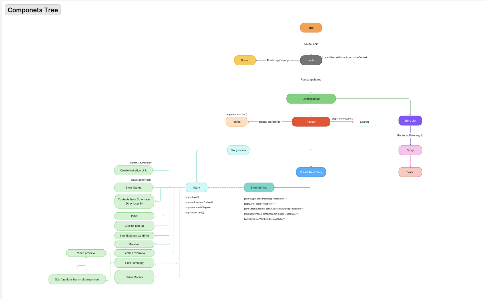
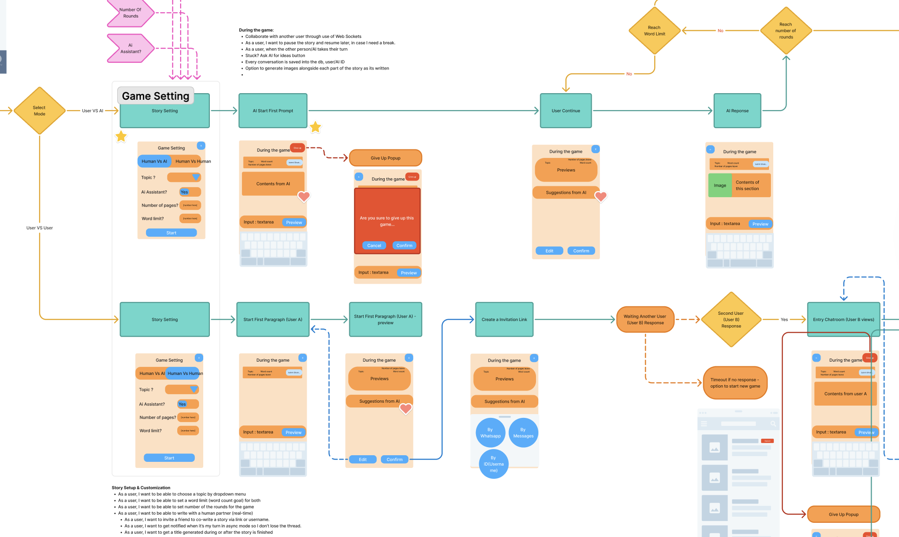
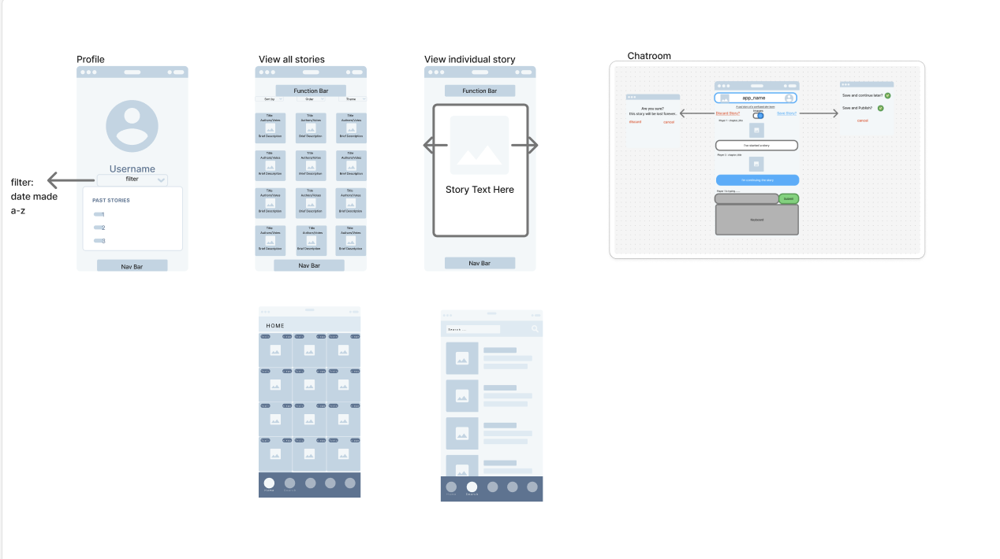

Co-Write is a mobile application developed as a group project at Northcoders Bootcamp. The goal was to design an intuitive experience that enables users to co-create narratives in real time, contribute meaningfully to shared stories, and explore completed work in an engaging, accessible format.
This MVP was designed and built over three weeks, with a focus on clear user flows, interaction feedback, and collaborative behaviour within a constrained mobile interface.
Designing Co-Write helped me develop a stronger understanding of collaborative UX patterns, including how users discover, join, and contribute to shared content. Working in a team required aligning on interaction decisions, handling feedback, and iterating on flows based on usability and clarity.
Building for mobile also strengthened my approach to information hierarchy, affordances, and accessibility, while balancing technical constraints with user needs.
Initial planning used flow diagrams and wireframes to define user journeys and interaction patterns.
  